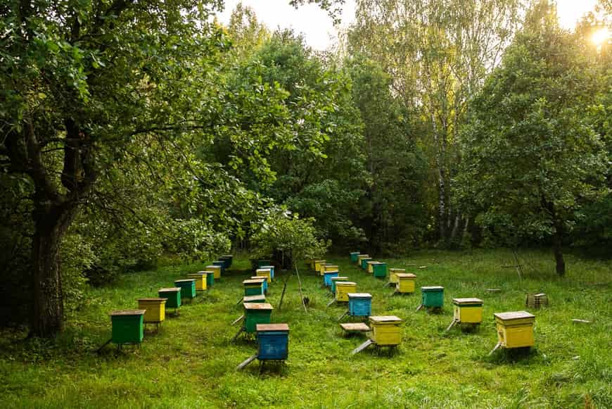

Разведение пчел
Пчеловоды разводят пчёл с несколькими целями и используют различные методы для этого. Вот основные причины и способы разведения пчёл:
Обеспечение ульев продуктивной пчелиной популяцией:
Пчеловоды разводят пчёл для поддержания и увеличения численности пчелиной семьи. Это позволяет увеличить сбор мёда и других пчелиных продуктов, таких как пыльца, воск и прополис.

Селекция и улучшение генетических характеристик:
Пчеловоды могут использовать разведение для селекции пчёл с желаемыми характеристиками, такими как высокая продуктивность, миролюбивое поведение, устойчивость к болезням и адаптация к местным климатическим условиям.
Поддержание и развитие местного пчеловодства:
Разведение пчёл помогает поддерживать местное пчеловодство, обеспечивая постоянное наличие пчелиной популяции для опыления сельскохозяйственных культур и производства мёда.
Разведение для продажи и обмена:
Некоторые пчеловоды разводят пчёл для продажи маток, ульев или пчелиных продуктов другим пчеловодам или начинающим пчеловодам.
Разведение пчел может быть как естественным, так и искусственным. Вот обзор обоих методов:
Естественное разведение пчел:
Процесс: Естественное разведение пчел происходит без вмешательства человека и основывается на естественных биологических процессах. Матки пчёл спариваются с трутнями во время свадебных полётов в окружающей среде.
Преимущества:
Естественное разведение требует минимального вмешательства со стороны пчеловода, что снижает затраты времени и ресурсов.
Этот метод позволяет сохранить естественное разнообразие генетических характеристик в пчелиной популяции.
Недостатки:
Отсутствие контроля над процессом спаривания может привести к случайным скрещиваниям и ухудшению генетического состава пчёл.
Естественное разведение может быть менее эффективным в достижении конкретных целей селекции.
Искусственное разведение пчел:
Процесс: Искусственное разведение пчел включает в себя активное вмешательство пчеловода в процесс разведения. Это включает в себя выбор и подготовку маток и трутней, контролируемое спаривание и уход за потомством.
Преимущества:
Искусственное разведение позволяет пчеловодам контролировать генетический состав и качество пчелиной популяции, выбирая лучших маток для разведения.
Этот метод позволяет достичь специфических целей селекции, таких как улучшение продуктивности, адаптация к определенным климатическим условиям и повышение устойчивости к болезням.
Недостатки:
Искусственное разведение требует больших усилий и ресурсов со стороны пчеловода, включая время, деньги и знания.
Некоторые пчелы могут быть менее подходящими для искусственного разведения из-за их миролюбивого или агрессивного характера.
Оба метода имеют свои преимущества и недостатки, и выбор конкретного подхода зависит от целей пчеловода, его опыта и предпочтений.